Я думал, что в этом году большой статьи у меня не получится по разным причинам, но из попытки кратко написать о фестивале вышло 4 страницы текста. Еще есть очень много цифровых фотографий, которые будут выложены в галерее фестиваля. Некоторые люди говорят, что программа в Нотоддене в этом 2003 году была менее звездная, нежели в ударном предыдущем. Может быть, отчасти это и верно, но это не так важно, ибо основное впечатление оставляет несколько крутых концертов, которые ты посетил.
Мы ездили в этом году в первый раз вшестером, включая Диму Красивова и Володю Русинова с Мариной. Кажется, что все получили кучу приятных впечатлений. Вот, что было хорошего по порядку выступлений...
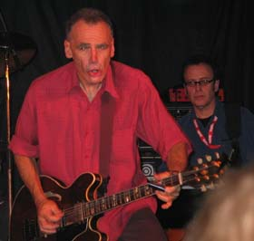
Dave Hole из Австралии - отличный слайд-гитарист, с ним на басу играл Bill Troiani, который приезжал к нам в мае в составе бенда Морюдов. Хоул играл на полуакустическом Гибсоне, слайд, как обычно, держал сверху. На гитаре у него стоит специальная машина, которая позволяет в каждой песне при необходимости менять строй парой рычажков. Он играл в 2-х или 3-х открытых строях, а также - в обычном, что разнообразило звучание. Дейва нельзя причислить к многочисленным слайдовым рокерам-запильщикам, он играет не жестко и по-другому. У него немного слабоват голос, но это - не очень большая проблема. Во многом его концерт похож на прошлогоднюю концертную пластинку Live One. Кроме концерта Хоул провел workshop, где рассказал о кое-каких жизненных обстоятельствах. Например, он играет слайдом сверху потому, что через две недели после того, как начал пробовать играть слайдом, сломал мизинец. А пока был в гипсе, от нечего делать играл, как мог, потом уже обратно переучиваться не захотелось. Вообще, Дейв Хоул - очень приятный во всех отношениях и непафосный музыкант и человек.
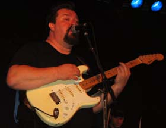
Omar & the Howlers - техасский гитарист-блюзмен, играющий в трио. Я ожидал некоторой легкой занудности, но концерт в результате мне очень понравился. Омар - внушительного вида дядя, не перепиливает, извлекает очень мощные и отточенные звуки из гитары, и голос у него очень сильный. Он постоянно развлекает публику, извлекая свои фирменные звуки из страта, к примеру, дергает интенсивно открытые струны или колотит огромными локтями по корпусу гитары. Одним словом, полное ощущение от этих штук и от манеры игры, что он виртуозно контролирует звучание гитары и пр. Многие худосочные нервозные техасские блюзмены или просто блюз-рокеры посередине композиции закатывают глаза, уходят в себя и начинают мельтешить, что сопровождается перепилами, кашей и т.д. Тут абсолютно противоположное впечатление. Мощный, большой спокойный гитарист, который постоянно контролирует звучание, к примеру, играет забойнейшие небыстрые шаффлы и т.д., постоянно находится в этом мире, в контакте с публикой, играя для нее, а не для себя, и не перестает публику развлекать. Такой подход мне нравится гораздо больше ;) И вообще, Омар, похоже, - один из самых качественных нынешних техасских блюзменов такого формата. Замечательный концерт!
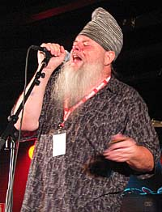
Mark Hummel и James Harman, - два знаменитейших губных гармониста с западного побережья, выступали с группой Хаммела всю ночь в составе шоу гармонистов под названием Mark Hummel Blues Harp Meltdown. Позже с ними вышли черные гармонисты Snooky Pryor и Mojo Bufford, но мы были вынуждены к тому моменту убежать на другой концерт. Харман, вообще, - столп вест-коаст блюза, он, в частности, в течение почти 10 лет взращивал в своей группе гитариста Кида Рамоса, а его альбомы типа Extra Napkins - считаются классикой. Кроме достоинств гармониста и организатора классных групп, у Хармана потрясающий блюзовый голос, который, пожалуй, и составляет основное впечатление. Супер!
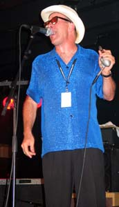
Марк Хаммел - чуть более молодой гармонист (в сравнении с Харманом), его главные достоинства, которые хочется отметить, - это владение всеми стилями и позициями на гармонике, как на диатонике, так и на хроматической, благодаря чему песни звучат великолепно и по-разному. Хаммел очень много работает и бережно относится к музыке, тому, что играет. У него замечательно сочетается знание и любовь к блюзовой классике, включая чикагских мастеров, а также более поздние формы вест-коаст блюза. Хаммел много рассказывал на своем воркшопе, и на его примере очень интересно наблюдать, как гармонист, играющий многие вещи с совершенно современным вест-коаст звучанием, в основном вдохновляется классиками типа Little Walter, SBW II, Big Walter Horton и др. Для него это - совершенно гармоничное развитие той музыки. Хаммел не раз говорил о том, насколько важно слушать музыку, чтобы хорошо играть, насколько важно копать «вглубь», не ограничиваясь только современными музыкантами. И то, что нужно слушать самых разных музыкантов, включая джазовых, музыку на духовых инструментах, а не только гармонистов, чтобы развиваться в музыкальном плане.На сегодня Хаммел выпустил уже штук 10 альбомов с разным материалом. В его группе Blues Survivors, кроме того, играет замечательный очень сильный гитарист Charles Wheal, который не позволял себе ни одной лишней ноты. Его аккомпанемент и соло были очень выразительными и одновременно лаконичными, вот это - признаки настоящего мастерства. Концерт гармонистов был великолепный, от него у меня поехала крыша.
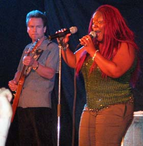
Shemekia Copeland была одним из хедлайнеров этого фестиваля. Я видел ее два года назад в Нотоддене и уже имел представление о ее концертах, но на этот раз Шемекия выступила еще сильнее. Учитывая ее довольно молодой возраст, видно, что она постоянно развивается. Главное впечатление - это мощь и драйв всех ее песен. Крутейший голос, звук, и аранжировки, которые она делает со своим потрясающим напарником-гитаристом Arthur Neilson, выступающим с Шемекией с ее детства. У группы все получается чрезвычайно качественно. Два года назад у меня были схожие впечатления, но не в такой сильной форме. Сейчас Шемекию стало слушать интересней. По части мощи, качества аранжировок и драйва я никак не могу избавиться от приходящей в голову аналогии с современными пластинками Джона Майалла. ;) Странное сравнение, но интуитивно мне кажется довольно точным.
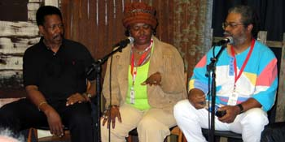
STAX SOUL REVIEW - так называлось шоу артистов, записывавших соул на знаменитой STAX Records в Мемфисе. В его составе приехали Эдди Флойд, Литтл Милтон, Карла и Марвел Томас (дети Руфуса Томаса) и Memphis Soulstars Orchestra. Они были главными хедлайнерами фестиваля. Эту команду привезли в Нотодден под лозунгом "Stax is back!", чтобы продемонстрировать цвет соул-блюза времен его максимального развития. Правда, во время беседы в библиотеке Марвел Томас сказал, что он до сих пор плохо понимает термины «соул» или «соул-блюз» - ибо это ярлыки, которые вешали маркетологи записывающих компаний, чтобы впарить слушателям новые пластинки. Их концерт проходил в самом большом зале Roadhouse, который представлял собой гигантскую разборную цирковую палатку. Увы, мне удалось поприсутствовать на этом празднике только 15 минут, поэтому особых воспоминаний у меня не осталось, только пара-тройка фотографий.
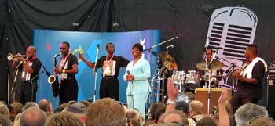
Irma Thomas & The Professionals произвела на меня огромное впечатление одной песней «Time is on my side» на открытии фестиваля. После этого мы были в Нотодденской церкви, где слышали госпел-версию концерта. Почти каждый год на фестивале бывает один концерт духовной музыки в местной лютеранской церкви. Два года назад, например, там пел Терри Эванс. Концерт Ирмы мне понравился, но я бы с большим интересом послушал ее блюзовую программу. Времени, чтобы все посетить, увы, абсолютно и как обычно не хватало.
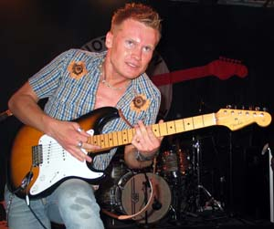
В субботу, в последний день больших концертов, мы пошли на норвежцев, побывавших в Москве - Amund Maarud Band и Vidar Busk, которые выступали подряд в довольно большом «зале» Taperiet, куда помещается более 1500 человек. Удивительно, что на первый день фестиваля этот концерт был единственным полностью раскупленным, несмотря на наличие большого числа американских звезд, вокруг которых делалась основная реклама. На следующий день раскупили второй фестивальный концерт - Amund Maarud / Dave Hole, что наталкивает на мысль о том, что самым популярным исполнителем на фестивале в этом году был Амунд Морюд, и даже - не Бюск ;). Концерт Морюда был убойным, возможно, что даже более мощным, чем лучшие концерты в Москве. Два месяца для Морюда не прошли даром. Песни были практически те же, что в Москве, но на этот раз я был совершенно ошеломлен количеством и качеством эмоционального блюза в исполнении Морюда. Он дополнительно завелся оттого, что было очень много ревущей публики, получилось очень сильно. Браво! Это, как мне кажется, - та самая живая форма блюза, о которой все время говорят. С блюзом все в порядке, жив вполне в наше время ;) Сам Морюд за последний год стал национальной блюзовой звездой, и очень хорошо, что мы успели послушать его у нас, пока агенты не стали заламывать за него заоблачную цену.
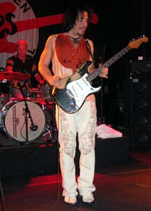
Бюск, который выступал после Морюда, давно является норвежским национальным героем. Какие-то люди из толпы во время убийственного выступления Морюдов говорили в виде смешной формулы, что «Морюд - хороший, но Бюск - лучше». Тем не менее, на этот раз Бюск выступил по каким-то причинам послабее обычного, хотя доставил всем очень много удовольствия. Он два месяца назад опять начал играть в трио, вернув часть своего старого репертуара. При этом на концерте перед полуторатысячным бушующим залом Бюска потянуло в забойную гитарную игру, которая больше удовлетворяла потребности желающих потанцевать, нежели задевала какие-то чувствительные струны в утонченной душе гитариста-меломана, что, вообще-то, Бюск, ох, как хорошо умеет делать. Бюск в начале концерта подошел ко своему огромному ламповому усилителю и повернул ручку в положение погромче, что и определило звучание на весь оставшийся концерт. Я не в первый раз наблюдал, как в голове Бюска на концерте спонтанно борются и сменяются настроения рок-н-ролльного угара и утонченной замысловатой импровизации. Никогда не знаешь, чего от него ожидать, во многом это зависит от публики. Московские концерты Бюска мне понравились больше, несмотря на их менее блюзовую стилистику. Вероятно потому, что он в Москве сыграл много новых песен, которые тщательно перед этим готовил, а в Нотоддене - старые, почти на шару и в упрощенной аранжировке. Ну что же, раз на раз не приходится. В следующий раз опять может быть безумно круто.
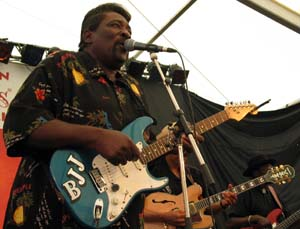
Завершился фестиваль мероприятием под названием Notodden-Clarksdale Blues Exchange. Следует отметить, что Notodden - город-побратим Кларксдейла - столицы дельты Миссиссиппи. По этому случаю на фестивале собрали сборную из трех нотодденских групп, а также привезли большую команду черных музыкантов из дельты и вокруг - Big Jack Johnson, Pinetop Perkins, Sam Carr, Mojo Bufford, Willie "Big Eyes" Smith, а также старого знакомого по фестивалю - Super Chickan. В Нотоддене наиболее приличная группа - Notodden Blues Band с хорошей певицей Torhild Sivertsen, они только что выпустили пластинку, которая лежит на видном месте во всех норвежских музыкальных магазинах. К сожалению, на джеме эта группа, размешанная другими местными музыкантами, выглядела не лучшим образом. Последующий джем из «своих» был сущим кошмаром. Все это меня натолкнуло на глубокую философскую мысль и заставило ее основательно прочувствовать. Мысль о какой-то глобальности, всеобщности и взаимосвязанности в мире блюзовой музыки. Есть не так уж много по-настоящему хороших музыкантов, как у нас, так и у них, и везде их окружает множество нехороших. Этот джем отозвался для меня болью в сердце и мыслью о Родине.Миссиссиппссккая часть сборной выступила на уровне, хотя тоже не без промахов. Супер-Чикан включил какую-то новокупленную страшную дисторшн примочку, которая срезала все частоты, а также превратила его гитарные соло в нечленораздельное жужжание. Ему это, вероятно, понравилось, ибо было круто. ;) Mojo Bufford полпесни самозабвенно сыграл на гармошке неправильной тональности, пока гитарист не доказал ему, что он не прав, в результате некоторых препирательств на сцене. Фронтмен Big Jack Johnson сыграл и спел отлично, и весь бенд звучал очень зажигательно. Под конец, правда, праздник омрачил церемониальный джем на 40 человек, во время которого звукорежиссер сидел, закрыв голову руками, а трое музыкантов в течение всех двух песен оставались на сцене и жестами упрашивали их куда-нибудь подключить.
Из остальных именитых участников фестиваля нам не удалось послушать пианистку Marcia Ball, старого знакомого «москвича» Chris Thomas King, который ходил в реперской шапочке и однажды утром порассуждал вместе с Амундом Морюдом и Литтл Милтоном о будущем блюза в блюзовой библиотеке. Также, согласно весьма заслуживающим доверие источникам, потрясающий концерт сыграл молодой гитарист Sean Costello. Вот об этом пропущенном концерте я действительно очень жалею.
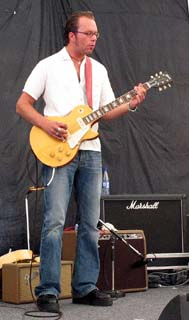
Отдельное и очень большое получасовое удовольствие мы словили днем, когда случайно попали на конкурсное выступление Eirik Bergene Band. Я шел один по улице, услышал кое-что со стороны главной сцены на центральной площади, и побежал проверять, что же за гитарист там так круто играет? Оказалось, что был хорошо известный нам Hakon Hoye - второй-гитарист из группы Морюдов. Там же я встретил и Диму с Вовой, которые также пришли на манящие звуки гитары. Eirik Bergene - 19-летний очень талантливый гармонист, который играет на гармонике всего 2.5 года, но добился уже весьма впечатляющих результатов, причем, как на хроматике, так и на диатонической гармошке. Хакон в этой группе смог развернуться и показать, все, что он умеет делать. А гитарист он - отменный! Одним словом, от этой группы у меня остались отличные впечатления. Здорово!
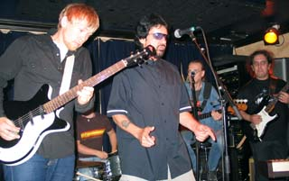
В Осло мы провели два с половиной дня, где были завсегдатаями главного блюзового места - клуба Мадди Уотерз. Этот клуб в некотором смысле почти является воплощением мечты об идеальном блюзовом клубе. Он - довольно большой, устроен как очень длинное вытянутое помещение, в конце которого находится сцена, а по бокам прохода - маленькие столики со скамейками и барная стойка. Все устроено так, что из любой точки видно сцену. На потолке вдоль всего клуба развешаны дополнительные порталы, так что слышно одинаково хорошо отовсюду. В клубе нет кухни, и продают только пиво с орешками, водку и блюзовые сувениры. Концерты (притом, довольно качественные) в клубе каждый день, и, к тому же, очень редко повторяются. Несколько живущих в Осло знакомых говорили, что они почти каждый день гуляя по городу заходят в Muddy Waters тусоваться, это для них очень естественно. Вероятно, поэтому в клубе всегда много людей. Каждое воскресенье в клубе бывает джем, который удивляет качеством своих рядовых участников. Мы попали на джем, который вел американский певец R.C.Finnigan, который давно связан с Норвегией, и написал несколько текстов для песен Бюска и Морюда. В качестве ритм-секции с ним играла хорошо знакомая нам пара - Хенрик «Не Слабак» Морюд и Билл Трояни. На этом джеме вполне отличились наши друзья Вова Русинов и Дима Красивов. Дима сорвал дополнительный урожай аплодисментов публики и похвал от Финнигана. Сам Финниган с Биллом перед всем этим пару раз интриговали публику фразой: «Russians are here!».Что интересно, для проведения джемов в клубе есть достаточное количество огромных качественных ламповых усилителей, а на стене висит три хороших гитары, которые предназначены для джемующих музыкантов. Так что в проходе спотыкаться о гитары не приходилось.
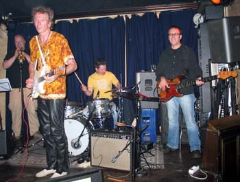
В первый день в клубе мы послушали гитариста и автора песен Mason Ruffner из Техаса в сопровождении той же самой ритм-секции из ансамбля Морюда, а также отличного норвежского молодого гитариста и норвежской же духовой секции. Сам Раффнер играл разнообразно и умело как блюз, так и фанк и прочие вещи, но немного сумбурно и беспорядочно. Норвежская группа была на высоте и показала настоящий класс. В результате, несмотря на неудачи Раффнера, концерт получился очень веселый.Примерно так прошел фестиваль 2003 года, на котором мы каждый вечер слушали очень хорошую музыку. Еще рано, но мы с друзьями уже морально готовимся ехать в Норвегию опять. Хотя забронировать места в нотодденском отеле на август 2004 года нам не удалось - все уже занятно более расторопными меломанами.
Федор Романенко, 17.08.2003